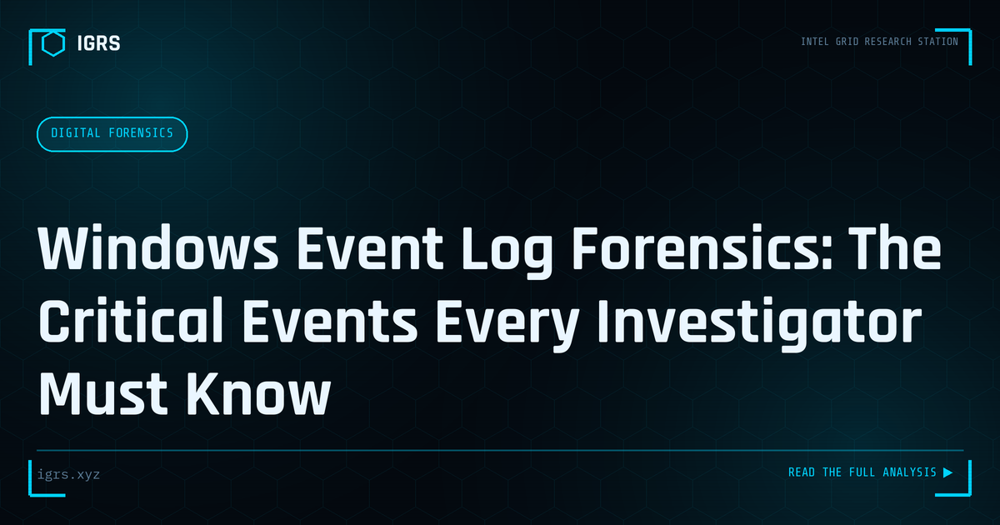

Windows Event Log Forensics: The Critical Events Every Investigator Must Know
| File No. | IGRS-054/2026 |
| Subject | Guide to Windows Event Log analysis for incident investigation and intrusion reconstruction |
| Category | Digital Forensics |
| Author | Manuj Kumar Pandey |
| Published | 2026-05-18 |
| Reading time | 7 minutes |
Windows Event Logs record virtually every significant action on a Windows system. Knowing which events matter — and reading them correctly — is a core DFIR skill.
Authentication events
Event ID 4624 — Successful logon: Records every successful authentication. The Logon Type field is critical: Type 2 is interactive (console), Type 3 is network (file share, WMI), Type 10 is remote interactive (RDP), Type 5 is service. Type 3 events from unusual source IPs indicate lateral movement. Event ID 4625 — Failed logon: Large numbers from a single source indicate brute force. Failure reason code 0xC000006A means wrong password; 0xC0000064 means unknown username. Event ID 4648 — Explicit credential use: Indicates pass-the-hash, credential stuffing, or legitimate service account use. Event IDs 4768/4769 — Kerberos ticket requests: Unusual encryption types (RC4) in 4769 events may indicate pass-the-hash or Kerberoasting activity.
Process and execution events
Event ID 4688 — Process creation: Records every new process launched, including full command line if audit policy is configured (not enabled by default — enable this immediately). Parent-child relationships reveal execution chains: cmd.exe spawned by Word is malicious; spawned by Explorer is normal. Event ID 7045 — New service installed: Attackers frequently install services for persistence — any new service on production systems merits review. Event ID 4698 — Scheduled task created: Includes the full task XML configuration showing what the task will execute and when.
Account and privilege events
Event ID 4720 — User account created: New accounts outside business hours or by unexpected actors are high-priority triggers. Event IDs 4728/4732 — Member added to security or local group: Adding users to Administrators or Domain Admins is a critical indicator. Event ID 4776 — Domain controller credential validation: Pattern analysis across these events reveals credential-based attacks in progress.